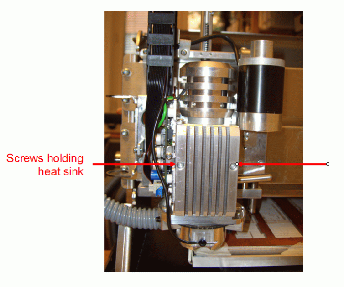

LPKF ProtoMat S42: removing Z-axis assembly with spindle motor
At the end of June 2010 the collet was not holding in drill bits or mill
tips. The initial suspicion was that there was dirt in the collet. After
clearning with a very small (dental) brush - one of the 0.370mm drill bits
would hold, but not tighly. Milling bits were not held at all.
Initially it appeared that the whole machine (43 kg) would have to be
shipped back for repair. However, the local distributor
Solectro AB
called on Friday 9 July
to say that we could simply remove the Z-axis head and ship that to them for
repair. So that afternoon I started to remove the acoustic cover to get to the milling
head. On Monday I got a note from Sven Ems at the LPKF factory with a nice guide
to removing the motor assembly block. This document is called "Exchanging the milling
spindle of the ProtoMat S 42" dated 2 July 2008. It had the file
name "PM_S42_Exchange-milling spindle - both versions-e.pdf"
This page attempts to describes what I did, but only for informational
purposes. It is only for use by those knowledgable in such repairs. Many
of the pictures were taken out of order, but the description is hopefully clear.
I used a parts box with bins to place the various screws and other parts
in as I removed them. Each bin was assigned a number of the for Bn, where n
is an integer.
- The zeroth step was to turn off the power and disconnect the power cable from the
ProtoMat S42.
- Remove the 8 Torx T20 flat head screws from each of the left and right plastic parts
of the acoustic cover. Place these screws in bin B1.
- Remove vacuum hose - lifting up the hose from the metal tube at the
milling head.
- Remove 3 Torx T20 screws from the top of the back cover. Place these screws in bin B2.
- Remove 2 Torx T20 screws and lock washers from each side of the bottom vertical
brackets holding up the plexiglass & metal top. Place these screws in bin
B3. Remove the plexiglass & metal top.
- Remove 3 flat head Torx T20 screws from ach side of the plastic covers of the
machine. Place these screws in bin B4.
- Loosen top metal T25 screws - that act as a hinge for the top metal cover
of the ProtoMat. Remove black plastic push pins from this top cover. Rotate
cover back this reveals the cables that run to the Z-axis head. Place these
screws in bin B5. See figure belows
- Remove the metal cover over the circuit board for the Z-axis. See two
Torx T10 screws in the figure below. Note that you also have
to remove the two screws on the front side (as seen facing the head) - to
get the cover to release cleanly - note that these screws simply hold the
cover together. In the figure these have been replaced into where they were
screwed into (beneath the cover) {so as not to loose the screws). Note that
there is a slot along the top of this cover for the black ribbon cable and
black round power cable to the LED.
- Remove the two Philips screws undered the black ribbon cable - to separate
the cable chain from the Z-axis head. See figure below.
- Remove the ground cables from the ground connection on the top of the
Z-axis controller board using a T10 screw driver. Note that from the screw
head coming inward there are two washers, then the lug for the round green ground cable,
then another washer, then the lug for the grounding strap. See figures
below.
- Remove the two Torx T10 screws holding the heat sink into place. See figure
below. 
- Remove the cables from the Z-axis controller board.
Note notch on top of motor connector cable. See figure below.
- Remove collet lever. See figures below. (Note this picture was taken before
the removal of the heat sink.)
.
- Remove the three T20 fixing head bolts from deep in the block of the
Z-axis milling head. See figure below. Place these screws in bin B6.
(Note that this picture was taken before removal of the collet lever.)
- Z-axis mount after removal of motor and controller assembly.
- Remove the Torx T10 screws holding circuit board fixture to block. Carefully slide the
motor cable out of the slot. Place these screws in bin B7.
- Remove circuit fixture (taking care not to get thermal paste on your hands).
The block will look similar to the figure below.
- View of the back of the circuit board fixture.
- Remove T20 screws that attach the depth limiter to the milling head. See
figure for the shapes of these two different small blocks. Note that the
bottom one can easily be reached from below. But getting to the top one
requires removing the controller board! Place the lower depth limiter block
in bin B8 and the upper depth limiter block in bin B9.
- View of where the top depth limiter attachment is connected.
- The removed motor assembly. See two views below.
- The depth limiter by itself. Note that the wire is soldered to the LED,
this limits the ability to work with it attached to the motor assembly.
Note that the wire is still connected to the light in the
depth limiter. Be careful not to break this wire.
On Tuesday 10 August 2010 the replacement motor mounted in its
mounting block arrived, and was installed on Wednesday 11 August 2010.
Detta är en personlig hemsida och åsikter framförda
här eller i tillhandahållna länkar representerar
inte KTH.
This is a personal homepage. Opinions expressed here or implied by links
provided, do not represent the official views of KTH.
For information contact maguire@kth.se
Latest update 23 August 2010, small fix 22 January 2015
© 2010,2015 G. Q. Maguire Jr., KTH/ICT